|
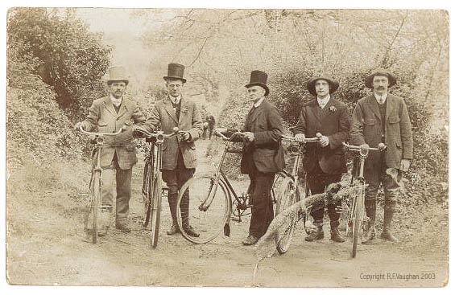 Gone on a bike ride. Have a nice weekend.
Left: Robert Kirby, who worked with Nick Drake. Right: Some guy. 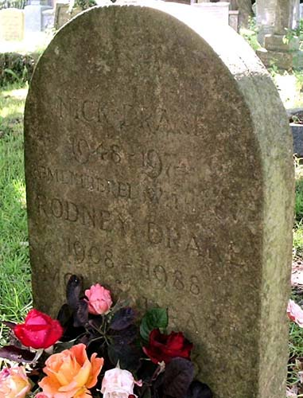 Nick's tombstone, where his Mother and Father were also buried. 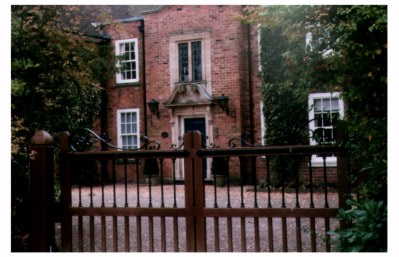 Far Leys - Nick's Childhood House. 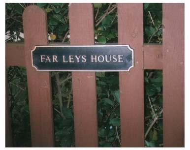
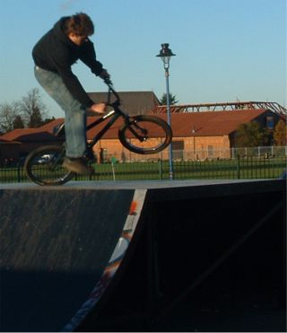 19 November Left: Dodgy opposite table 360 lander. whoops. Rudi's new website. I told rudi the real mans way of making websites last night. This is as far as we got. NOiD webiste has been in the making for too long. I want to get that finished this weekend. Hardware section - delete, The Scene - delete, Tapedeck - delete, Auntie Nigel - delete. I might bring them back if I get a design but I want to get the site working. From random bmx: A new park Kevin Garwood has been building... "West Kingsdown skatepark, it's been open for the last couple of weeks... The park is real small, but it's got a loada stuff crammed in, nice volcano, few quarters, wallrides, driveway/grind box, hip line, and a box/sub-box/mellow quarter type thing there, so it's all good and rideable! " Yeh, that's quite near Swanley which is quite near me. Maybe a visit at the weekend.Shark Update I have not done a shark update for a very long time as I have been very busy being a wife and earning Ben some money. But due to popular demand here is a shark update. I hope you enjoy it. It is about the shark with the most amusing name: The wobbegong shark. They don't tend to eat people, which makes them a lot less interesting. They are quite funny looking though: 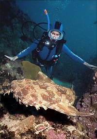 And they will bite you if you stand on one. Which is understandable. Yesterday I saw a lady who had lost her teeth but was looking forward to getting them back so she could bite people yum yum yum. Some information about wobbegong sharks (orectolobus ornatus) Size - 10 feet long Diet - The wobbegong has wormlike projections around its mouth that it uses to suck prey into razor teeth. Umm, that might hurt quite a bit. Habitat - indigenous to Australia and the coastal reefs of the Pacific, on the ocean floor waiting for fish to approach. Reproduction - the female hatches about 20 pups within her body, then gives birth to them. Not so different from humans then. 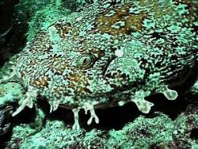 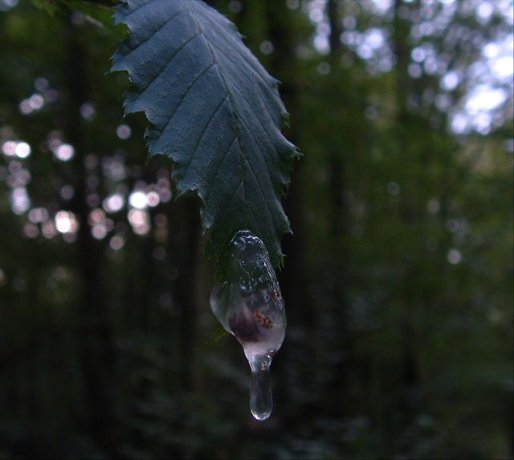 17th November The last two days have been some of the most boring of my life. It feels like I have been away for about a month. I have been in London on a conference. I have come away with 8 pages of quality doodles though so it wasn't a complete waste of time. I am very tired and the flat is an absolute tip. We are having a piano delivered on Saturday so I have to tidy everything up. And I lost the third adjustable spanner this month. On Friday I am going to Poole for the day which could have been good if it wasn't for a meeting all day. I am bored of this. 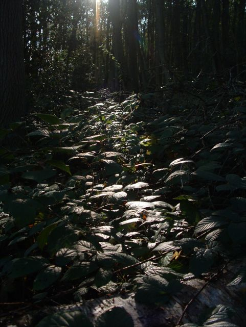 15th NovemberBeen busy recently. Some riding going on. I have lots of media off Tim's computer so I can sit here and update all night, but I am not going to. It can leak onto the internet slowly until spring. Interesting facts: Fire is fascinating Romford has the best skatepark in the south east Clay takes a long time to get wet The M25 is a joke. November is cold Tomorrow is Becky's birthday. Orange Juice is the best Mozart is good Nigel and Chris are generous with petrol money. Seb is a scoundrel Tim is still my favorite person to ride with. That is a list of things to remind me what updates I need to do. 13 November One year on: 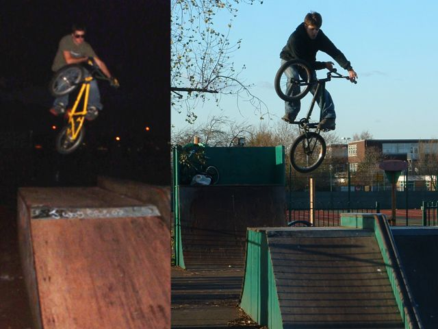 Inspired by this article written by yakky i have prepared the above. Strangely the first, last and only time I have ever been to Swanley was almost exactly a year ago. Today I went again, and did an unturndown. Spot the difference. Fortunatley I have learnt more than unturndowns in the last year. 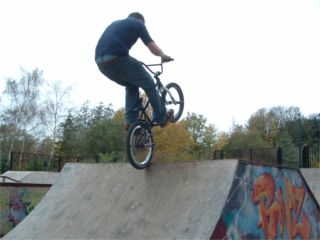 12th NovemberWatman park was nice and dry and sunny at lunchtime, but these pictures are from when it was wet. Left: Dean abubaca. Not been up to much recently . Bit of digging yesterday. That is probably the plan for the weekend - digging my hands to the bone. Yesterday was a fun day at work as far as it goes. I spent a lot of time traveling to school to visit them and not much time doing anything that might be labelled as work which is always nice. 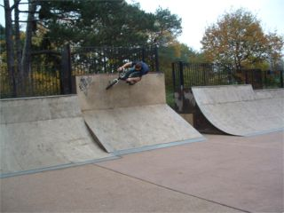 I got to read the new Ride on the train as well. I think it's probably the best ride ever. Well maybe - it's good anyway, lots of trails.On Monday I have the day off so we are going to go somewhere but the destination is not yet set. It depends a lot on the weather but it could be Sittingbourne all day. That could be good or bad depending how busy it is. It is also a bit annoying as the bmx sessions are only every 2 hours for 2 hours, so the rest of the time is spent watching skaters. Right: Dean trying a ruben wall ride - damp park remember. 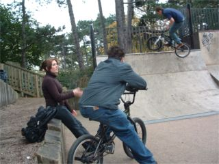 This pictures sums up last Monday. Dean was riding lots while Steve was chatting up this girl.The funniest thing was that Dean had a bit of a nasty cough which sometimes sounded like he was shouting things at the girl ;) Left: Feeble stall. I have an idea for a place for a ghetto park. Ride gave me a few ideas of things to try with quick crete. 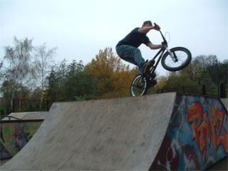 Right: Manual 180 to tyre tap to transition type thing.It's really hard to explain what this thing is. Kind of like a backwards 360 tyre tap over the box, but not really. I don't know the names for most tricks, or I get them wrong becasue i learnt them off the internet, for example I will say fuFAnu instead of FUfanu. The internet doesn't teach you how to say stuff very well. 11 November 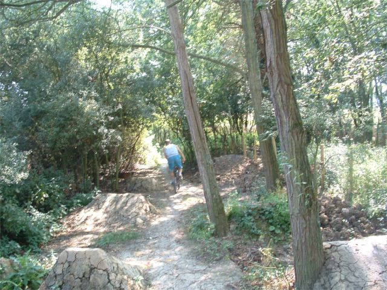 This picture descrbes everything i love about the summer and everything i hate about now, sitting inside, cold and bored with a headache and a drippy nose. So look see the sights 10th November 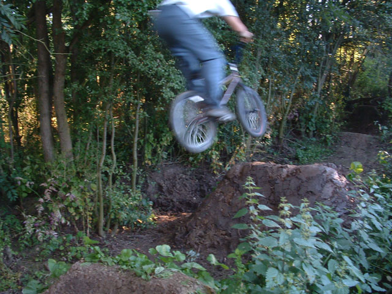 Computer and camera team are getting the job done. Here are some bonfire pictuires: fire1 fire2 Lima's interview is pretty funny. Some good pictures in there, although I am not sure why the one that got the two page spread got so much space when smalley has better ones. 8th November This picture is not just of a tyre tap. It's a bar spin tp tyre tap,
which looks really good. 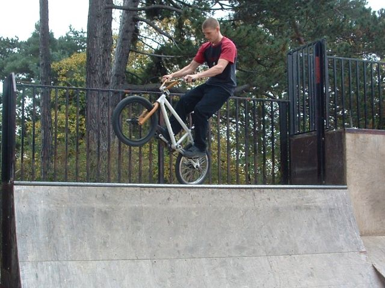 No foot can, other angle. Chris is watching from the pyramid thingy. 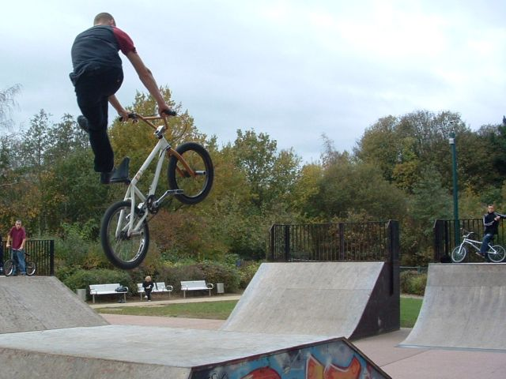 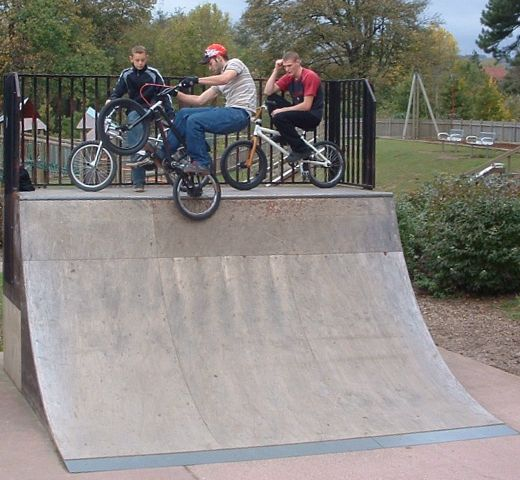 Ice pick.These pictures were taken this time last week. It's looking wet at the park today but it might clear up. I am going anyway so I'll see you there at about 1. I found out on friday that Lenham is getting a skatepark. That's close to my house. So give it a few years and there should be parks in Lenham, Headcorn, Tenterden and Paddock Wood. That will be good. Also, I am thinking about riding flatland when it's too wet to ride other things, but I don't even know how to start. Where can I learn flatland tricks? 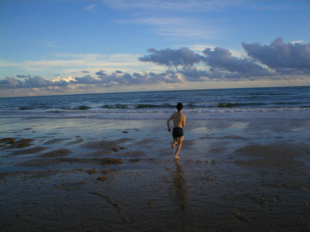 5th November Simpsons tonight channel 4 6pm. This is an amazing picture taken by somone of Seb. I wasn't there but I can be fairly sure that Seb is wearing his boxer shorts, not swimming shorts, and I am also quite sure that he didn't have a towel with him. Sites to look at How is everone fixed for 15th November? Next trip date. It's a monday. Maybe going to Rom if it's not raining or Sittingbourne if it is. My computer works again, but it won't connect to the internet and it has nothing on it. Maybe a real update on Monday. I am away for the weekend though. Right, off to the park... 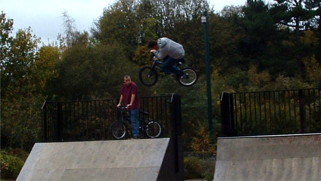 4th November. The computer parts came so we will see what happens tonight. The park has been really quiet at lunchtime the last few days. Just me and one other person, so more pictures from monday. This guy goes big on this hip. He usually tables on it really nicely but this is a wierd thing. I have been trying opposite tables on the quaters. They are fun. Driving lesson with Tim tonight as well. Went to a skatepark meething last night with Ian and Denise (?). They were really helpful and siad they will help us with Headcorn park. They had some plans for the Tenterden park from GBH ramps, which look ok. I have ridden some of their ramps. Wandle is quite good. Letherhead mini is ok for a small mini. 3rd November This is the graffiti artist at Maidstone skatepark. His job is to paint
stuff on the back of the ramps. I want that job. Is that enough cans of
paint? I think he must carry them round in the wheelie bin. 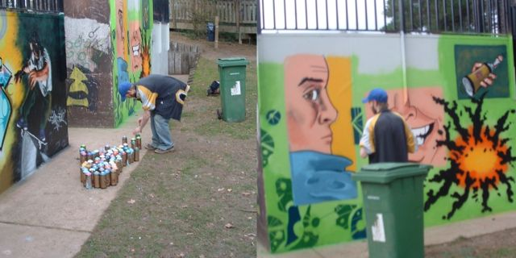 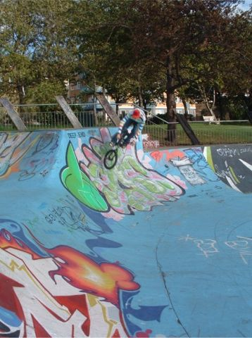 Another london picture on the left. I don't think I have put this up before. Mark was going quite a bit higher than this but my camera timing is awful, plus the camera was broken and wouldn't take photos of Tom at all.Tonight I am going to a meeting about Tenterden skatepark to meet the guy who said he will help us with Headcorn skatepark. I should be able to have another day off soon, what with working so many hours, so where shall we go this time? Leave your suggestions in the book. 2nd November Took the camera to the skatepark yesterday and got this picture along
with some others. Pretty good no foot can can. It looks like he is
sticking his tounge into the side of his mouth at the same time as kicking
his feet over the top tube. when i do xups i rotate my mouth to encourage
the bars to turn. Who is this? Answers in the book. 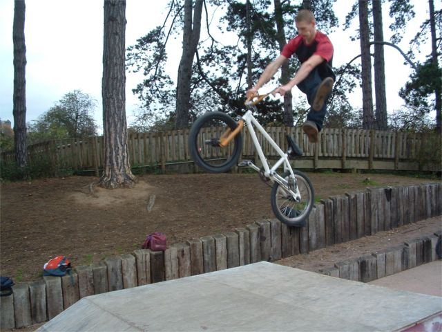 Photo stolen from small wheels big thrills, but then he was using my fisheye so it's allowed. 
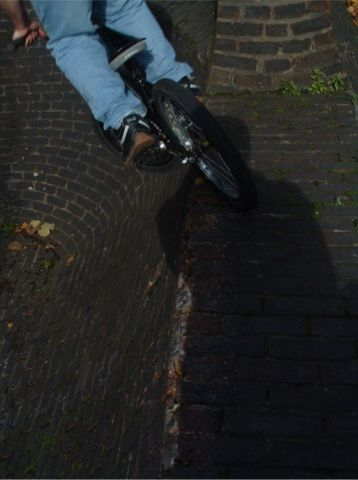 1 NovemeberComputer is still broken. Did some digging at the weekend. Also went to Burham. Computer will be fixed soon. Camera is broken too. I was at the park on Friday and someone came up to me and said "you make that scruffian website", which was pretty cool considering I had never met them before. I am taking the broken camera to the park today to get some photos which will appear on this website in about a year when my computer gets fixed. I watched four films at the weekend too so maybe some reviews later. They were good films. Also my new stem came so I might do a review of that. That picture is of Tom dropping in on the sketchiest brick transition you have ever seen. Old job: |


{kind=link}
{kind=link}
{kind=link}